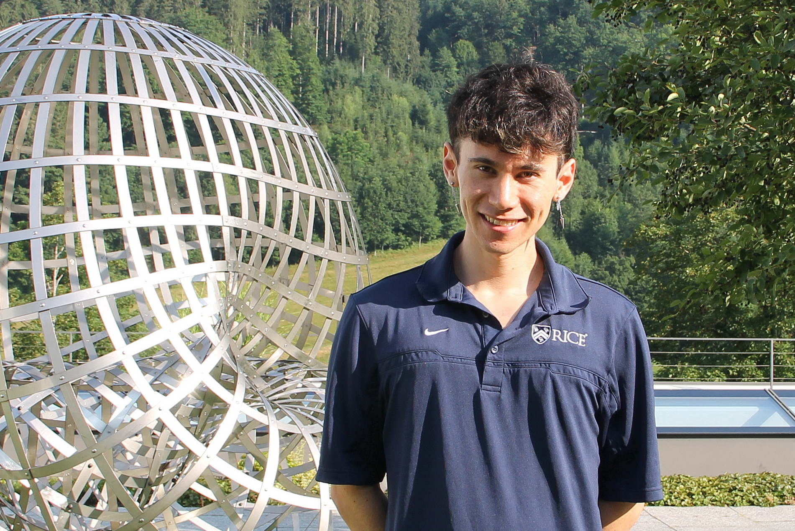

Welcome! I am an NSF Postdoctoral Fellow at the University of Chicago. I was previously a G.C. Evans Instructor and NSF Postdoctoral Fellow at Rice University, and before that, I completed my PhD at Stanford University under the supervision of Rafe Mazzeo and Otis Chodosh.
I am broadly interested in geometric analysis, with my recent work focusing on the Allen--Cahn equation, min-max constructions of minimal hypersurfaces, and Gromov's "p-widths." My past work has also focused on conformal geometry and asymptotically hyperbolic manifolds.
I co-organized the 2026 Rice Geometry and Dynamics Conference along with F. Arana-Herrera, D. Fisher, and C. Mantoulidis.
Here is a collection of notes I've taken
Here is my CV.
HBH 408. Email me at "jmarx"+"kuo"+"@"+"gmail.com".